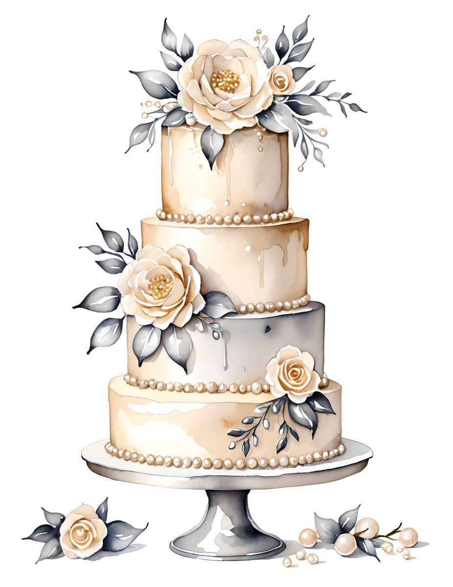
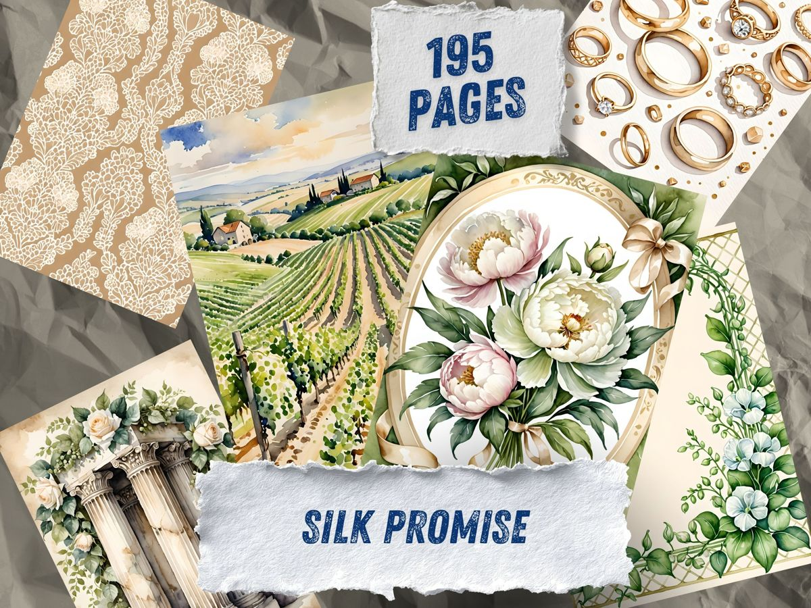

Sometimes the fastest way to choose a journal kit is to compare the feeling, not the file count. Here are two soft romantic directions: silver and candlelit, or sage and silk.




Choose Silver Vow if the page wants to feel quiet
Silver Vow is the softer option: cream flowers, grey leaves, lace, vows, and a keepsake mood. It works for memory pages, wedding journals, letters, and romantic neutral spreads.
Choose Silk Promise if the page wants a little garden air
Silk Promise leans more botanical and airy: sage, antique cream, olive, and a touch of old-world softness. It is useful when the page needs elegance without becoming too sweet.
Use them together when the page needs contrast
Put one pale page beside one deeper accent. Let the cream pieces calm the spread and the sage pieces give it structure.